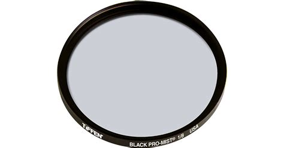

I use a Sony a7iii that comes in the box with a 28-70mm zoom lens. This lens is good for video as it has built in stabilization. |
credit: bhphotovideo.com |
|---|---|
I also use a Sony 50mm f/1.8 prime lens for crisp photos and sharp aperture. |
credit: bhphotovideo.com |
On that 50mm lens, I use a Tiffen 1/8 pro mist filten which softens harsh light and brings out the background in rainy or foggy settings. |
 credit: bhphotovideo.com |